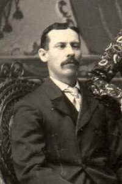
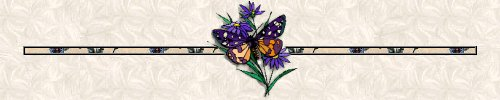

|
|
GÉNÉALOGIE DES CONSIGNY
|
| François Sanfaçon dit Consigny
Né en France
Décédé:
|
mariage
21 novembre 1735
Québec
|
Marie-Louise Ducharme
Née: 1718 au Qc
Décédée: 4 avril 1757
|
| Jean-Nicolas Sanfaçon |
25 octobre 1779
St-Jean-Port-Joli |
Marie Vaillancourt |
| Jean-Nicolas Sanfaçon dit Conscient |
24 octobre 1803
Rivière-Ouelle |
Josephte Thériault |
| Nicolas Sanfaçon dit Consigny |
2 mai 1843
Kamouraska |
Basilisse Landry |
Arsène Consigny
Né: 14 octobre 1865
Décédé: 26 février 1896 |
31 juillet 1888
Québec |
Amanda Thibodeau
Née: 2 février 1862
Décédée: 6 juillet 1907 |
| Charles Consigny
Né: 28 février 1893
Décédé: 19 octobre 1941
|
28 juillet 1919
Montréal |
Ézilda Côté

Née: 27 décembre 1891
Décédée: 17 octobre 1964
|
|
Jacqueline
Consigny

née: 7 août 1926
décédée: 3 mai 1986
|
29 juin
1946
Montréal |
Gérard
Charette

né: 19 octobre 1921
décédé: 25 juin 1996
|
| Source: généalogiste M. Gérard
Chabot (1999) et le PRDH |
|
Fils
de Jacques Sanfaçon dit Consigny et de Jeanne Bijolet, né en France
dans le diocèse de Langres, François se marie à Notre-Dame de Québec avec
Marie-Anne Ducharme le 21 novembre 1735.
François
Sanfaçon dit Consigny aurait été un soldat. Les
Consigny ont vécu dans le bas du fleuve, St-Jean-Port-Joli,
Rivière-Ouelle, St-Pascal, puis à Québec et Montréal.
|

|
GÉNÉALOGIE DES CÔTÉ
|
|
Prisque Côté
|
mariage
(acte non trouvé) |
Françoise Côté |
|
Pierre Côté
Né vers 1833
Décédé: 19 février 1889
|
21 juillet 1856
Québec |
Salomée Pleau
Née vers 1836
Décédée: 9 décembre 1888 |
|
Gaudias
Côté

Né: 12 avril
1863
Décédé: 14 mai 1918
|
6 novembre 1882
Québec |
Georgiana Pageau

Née: 25 juillet
1865
Décédée: 4
août 1951
|
|
Ézilda Côté
Née: 27
décembre 1891
Décédée: 17 octobre 1964
|
28
juillet 1919
Montréal |
Charles
Consigny
Né: 28 février 1893
Décédé: 19 octobre 1941
|
|
Gérard
Charette
né: 19 octobre 1921
décédé: 25 juin 1996
|
29 juin
1946
Montréal |
Jacqueline
Consigny
née: 7 août 1926
décédée: 3 mai 1986
|
|
Source: généalogiste M.
Gérard Chabot (1999) et le PRDH
|
|
M. Chabot a fait
ces recherches à la demande de Lucie, sa voisine, il n'a pu retracer plus
loin que les arrières-grands-parents d'Ézilda.
|
|
GÉNÉALOGIE DES PAGEAU
|
| Thomas Pageau
Né: 28 août 1642
Décédé: 14 mars 1706
|
mariage
13 novembre 1675
Québec
|
Marie-Catherine Roy
Née: 11 juin 1659
Décédée: 19 mai 1734
|
| Jean-Baptiste Pageau
Né: 2 mai 1682
Décédé: 4 février 1708
|
26 novembre 1703
Charlesbourg |
Marie Paradis
Née: 2 février 1684
Décédée: 23 mars 1715
|
| Thomas Pageau
Né: 21 février 1707
Décédé: 7 novembre 1777
|
17 octobre 1729
Charlesbourg |
Marie-Madeleine Gervais
Née: 1710
Décédée: 1760
|
| Jacques Pageau
Né: 27 mars 1743
Décédé: 29 avril 1815
|
9 juin 1766
Charlesbourg |
Marie-Françoise Bédard
Née: 1746
Décédée:
|
| Charles Pageau
Née: mars 1770
Décédé: 2 avril 1819
|
26 juillet 1796
L'Ancienne-Lorette |
Magdeleine Magnan
Née:
Décédée:
|
| Jacques Germain Pageau
Né:11 avril 1800
Décédé: 14 janvier 1882
|
30 juillet 1822
Charlesbourg |
Angélique Potvin dit Laviolette
Née:
Décédée:
|
| Louis Georges Pageau
Né: 5 mai 1827
Décédé: 19 avril 1911
|
18 janvier 1853
Charlesbourg |
Marie-Jacques
(Duhault)
Née: 26 décembre 1824
Décédée: 22 novembre 1909
|
| Marie-Georgianna Pageau
Née: 25 juillet 1865
Décédée: 4 août 1951
|
6 novembre 1882
Québec |
Gaudias
Côté
Né: 12 avril 1863
Décédé: 14 mai 1918
|
| Charles
Consigny
Né: 28 février 1893
Décédé: 19 octobre 1941
|
28
juillet 1919
Montréal |
Ézilda
Côté
Née: 27 décembre 1891
Décédée: 17 octobre 1964
|
|
Jacqueline
Consigny
née: 7 août 1926
décédée: 3 mai 1986
|
29 juin
1946
Montréal |
Gérard
Charette
né: 19 octobre 1921
décédé: 25 juin 1996
|
| Source:
internet et le PRDH |
|
Thomas
Pageau, né à St-Aignan, Sarthe, France (1642-1706) serait venu
s'installer au Canada avant 1675, puisqu'il s'y marie le 13 Novembre
1675 à Québec avec une canadienne d'origine, Marie-Catherine Roy (1659-1734).
Les
Pageau ont presque tous vécu à Charlesbourg, une municipalité au nord
de la ville de Québec, sauf quelques générations à
Loretteville. Marie Georgianna Pageau est née à Charlesbourg le 25
juillet 1865 dans la paroisse St-Charles.
|
|
DEUX
COUSINS DU NOM DE CHARLES
|
| J'ai
mis dans ma page web personnelle des données généalogiques sur les
Consigny. En mai 2003, j'ai reçu un courriel d'une internaute du
nom de Josée Consigny. Intriguée, elle voulait plus de
renseignements sur les Consigny, étant donné que son grand-père aussi
s'appelait Charles Consigny.
Après un échange de
courriels, et des renseignements qu'elle a pris auprès de sa tante
Lucia, nous en sommes venus à l'évidence qu'il y avait deux Charles
Consigny nés à la fin du 19ème siècle, et qu'ils étaient cousins.
|
|
Voici un tableau
pour mieux expliquer leur parenté:
Référez-vous au
tableau généalogique des Consigny, plus haut sur cette page: Nicolas Consigny
et Basilisse Landry
se marient le 2 mai 1843. Ils ont trois enfants.
|
|
1. Arsène,
marié à Amanda Thibodeau, ont trois enfants:
-
CHARLES
(28 février 1893- 19 octobre 1941) notre grand-père, époux
d'Ézilda Côté. Ils ont eu cinq enfants, dont trois ont atteint
l'âge adulte: Arsène, Fabiola, Jacqueline.
-
Antoine
-
Crescence
|
|
2. François-Xavier,
marié à Lucie Patry, ont trois enfants:
-
CHARLES
(août 1886- 27 juin 1943) époux de Dulcina Robitaille, ils ont eu sept
enfants (Charles-Eugène, Maurice, Marcel, Jean-Louis, Henri-Paul,
Lucia, Robert) (Robert est le père de Josée, l'internaute)
-
Eugène
-
Yvonne
|
3. Nicolas, marié à (?), ont quatre enfants:
-
Anna
-
Antoinette
-
Jeanne
-
un garçon
décédé à quatorze ans.
|

|
 CHEZ
LES CONSIGNY
CHEZ
LES CONSIGNY